在我们正式开始编程之前，先简单看一个样例应用https://studies.cs.helsinki.fi/exampleapp，了解一些 Web 开发的原则。
这个应用只是为了演示课程的一些基本概念，绝不是一个现代 Web 应用应有的样子。
相反，它展示了一些老旧的网络开发技术，这些技术在今天甚至可以被视作是糟糕的实践。
从第一章节开始，代码将符合现代开发的最佳实践。
在浏览器中打开示例应用。有时打开需要等一会儿。
Web 开发的第一原则。始终打开你的网络浏览器上的开发者控制台。在macOS上，通过_F12_或同时按下_option-cmd-i_来打开控制台。 在Windows或Linux上，通过_F12_或同时按_ctrl-shift-i_来打开控制台。控制台也可以通过上下文菜单打开。
在开发 Web 应用时，请记住始终保持打开开发者控制台。
开发者控制台如下图所示：
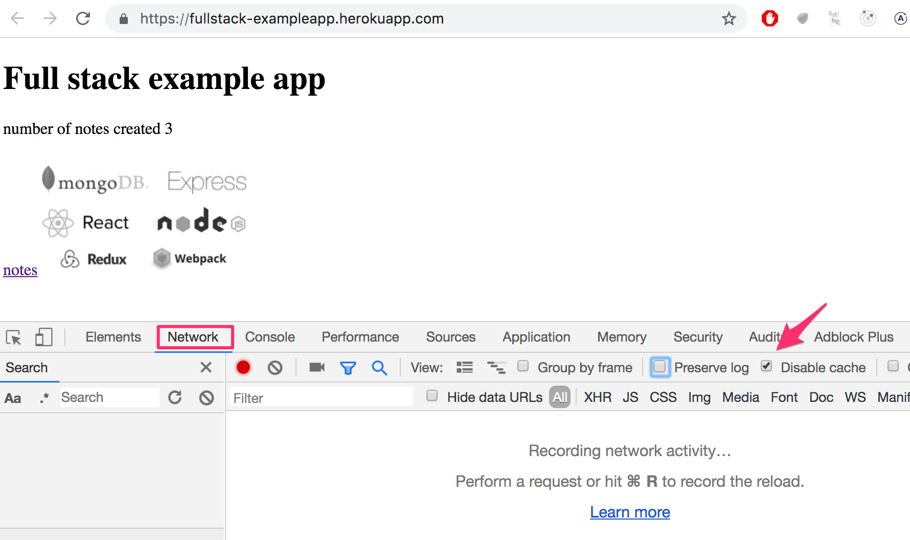
确保Network（网络）标签打开，并选中Disable cache（禁用缓存）选项，如图。Preserve log（保存日志）也很有用：它可以在重新加载页面时保存应用打印的日志。
**NB:**在开发中，最重要的标签是Console（控制台）标签。然而，在这个介绍中，我们将大量使用Network标签。
HTTP GET
服务器和 Web 浏览器使用HTTP协议相互通信。Network（网络）标签显示了浏览器和服务器的通信方式。
当你重新加载页面时（按F5键或浏览器上的↻符号），控制台将显示有两个事件发生：
- 浏览器已经从服务器获取了studies.cs.helsinki.fi/exampleapp页面的内容
- 并已下载了图片kuva.png。
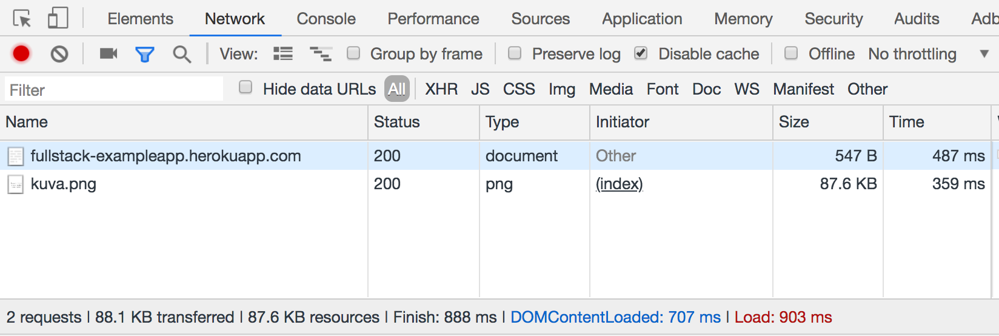
在小屏幕上，你可能要放大控制台窗口才能看到这些。
点击第一个事件可以看到更多关于本次请求的细节。
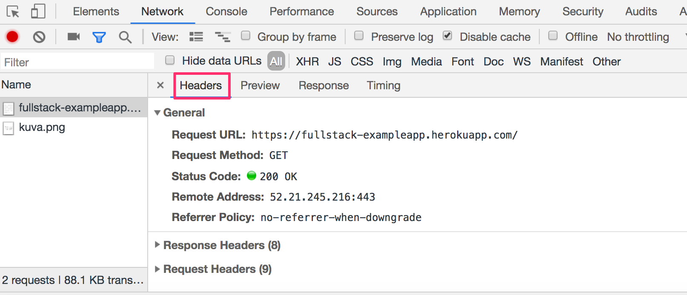
上半部分，General中的内容，显示浏览器使用GET方法向地址https://studies.cs.helsinki.fi/exampleapp发送了一个请求(地址是截图时的，现在已经略有改变)，并且请求是成功的，因为服务器的响应状态代码 为200。
浏览器的请求（request）和服务器的响应（response）有几个头信息。
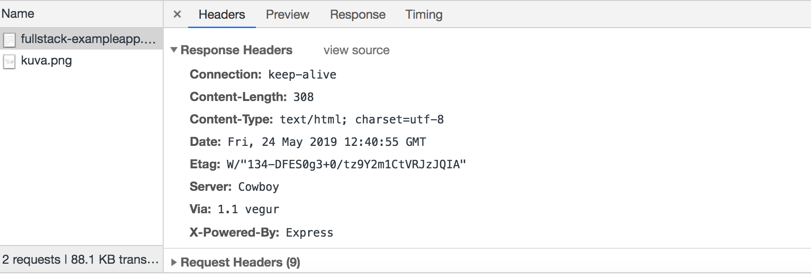
上面的响应头Response headers告诉我们，例如，响应的字节大小，以及响应的确切时间。一个重要的头信息Content-Type告诉我们，响应是一个utf-8格式的文本文件，其内容已经用HTML格式化。这样，浏览器就知道这个响应是一个普通的HTML页面，并将其 "像一个网页一样" 渲染到浏览器。
Response标签显示了响应数据，是一个普通的HTML页面。body部分决定了渲染到屏幕上的页面的结构。
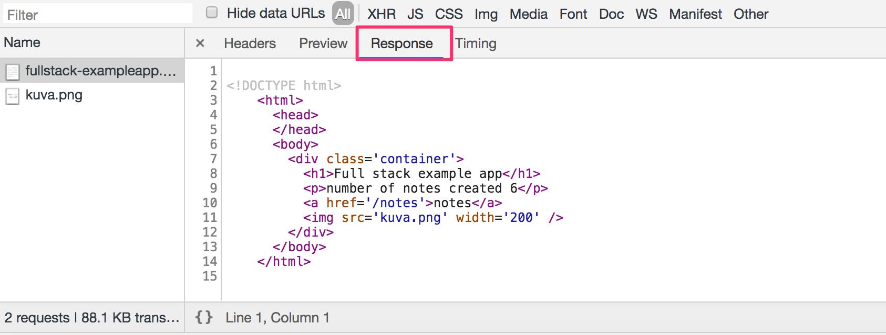
这个页面包含一个div元素，它又包含一个标题，一个指向页面notes的链接，以及一个img标签，并显示创建的笔记数量。
因为有了img标签，浏览器又做了一次HTTP-request，从服务器上获取图片kuva.png。该请求的细节如下。
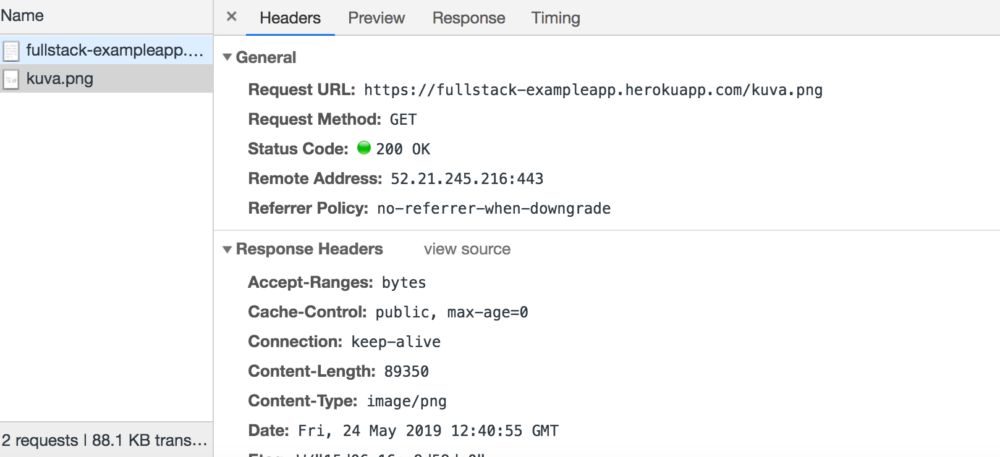
该请求是向地址https://studies.cs.helsinki.fi/exampleapp/kuva.png发出的，方法类型是HTTP GET。响应头告诉我们，响应大小为89350字节，其内容类型为image/png，所以它是一个png图像。浏览器利用这些信息将图像正确地渲染在屏幕上。

在浏览器上打开网页https://studies.cs.helsinki.fi/exampleap，所引起的一系列事件构成了以下时序图。
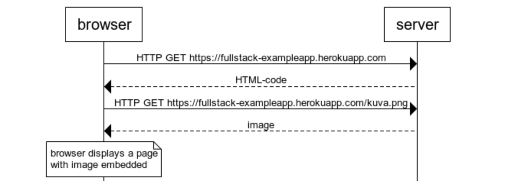
首先，浏览器向服务器发送一个HTTP GET请求，以获取该网页的HTML代码。HTML中的img标签提示浏览器获取图片kuva.png。浏览器将HTML页面和图像渲染到屏幕上。
尽管很难注意到，但在图像从服务器上获取之前，HTML页面就已经开始渲染了。
Traditional web applications
示例应用的主页运行模式类似传统的Web应用。当进入该页面时，浏览器从服务器上获取描述页面结构的HTML文档，以及文本内容。
服务器以某种方式生成了这个文档。该文档可以是一个保存在服务器目录中的静态文本文件。服务器也可以根据应用代码，例如使用数据库中的数据，动态地形成HTML文档。
示例应用的HTML代码是动态形成的，因为它包含了关于已创建的笔记数量的信息。
主页的HTML代码如下：
const getFrontPageHtml = (noteCount) => {
return(`
<!DOCTYPE html>
<html>
<head>
</head>
<body>
<div class='container'>
<h1>Full stack example app</h1>
<p>number of notes created ${noteCount}</p>
<a href='/notes'>notes</a>
<p class="missing-img">🖼️ 原文此处有一张示意图（官网源文件已缺失，可在官网原页查看）。</p>
</div>
</body>
</html>
`)
}
app.get('/', (req, res) => {
const page = getFrontPageHtml(notes.length)
res.send(page)
})
你还不需要理解这些代码。
HTML页面的内容已被保存为一个模板字符串，或一个能够运行的字符串，例如，在它中间包含变量。主页中动态变化的部分，即保存的笔记数量（即代码中的notesCount），被模板字符串中的当前笔记数量（即代码中的notes.length）所取代。
在代码中间编写 HTML 当然不是明智的做法，但对于老派的 PHP 程序员来说，这是一种常规操作。
在传统的 web 应用中，浏览器是个“憨憨”。它只从服务器上获取HTML数据，而所有的应用逻辑都在服务器上。服务器可以用Java Spring（如赫尔辛基大学的课程Web-palvelinohjelmointi）、Python Flask（如课程tietokantasovellus）或用Ruby on Rails来创建，仅举几个例子。
这个例子使用了Node.js的Express。
本课程将使用Node.js和Express来创建网络服务器。
Running application logic in the browser
保持开发者控制台打开。通过点击🚫符号清空控制台，或者在控制台中输入clear()。
现在当你进入notes页面时，浏览器会做4个HTTP请求。
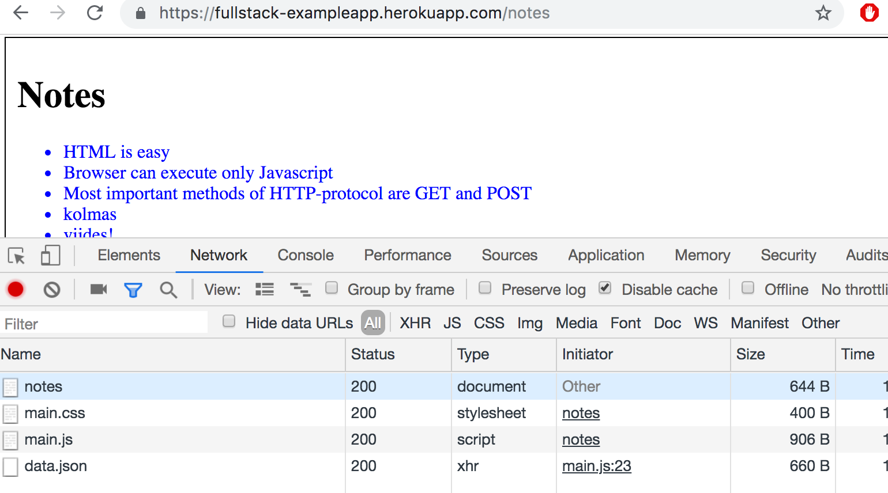
所有的请求都有不同的类型。第一个请求的类型是document。它是页面的HTML代码，看起来如下：
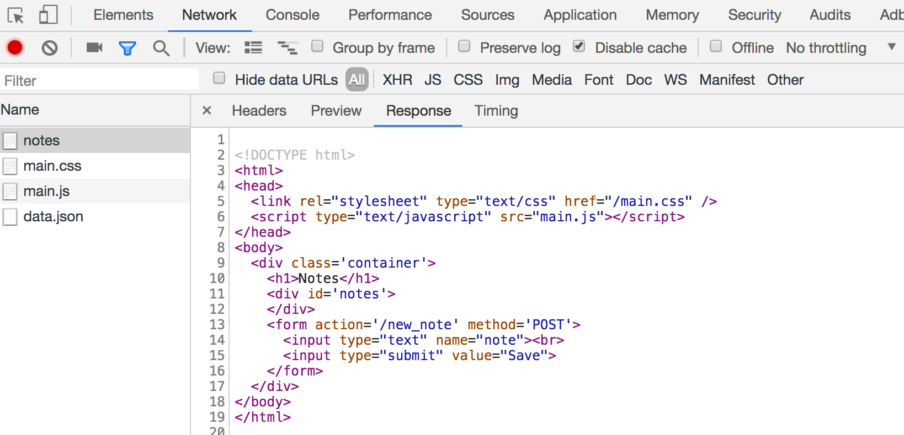
当我们比较浏览器上显示的页面和服务器返回的HTML代码时，我们注意到代码中不包含笔记的列表。
HTML的head部分包含一个script标签，它使浏览器获取了一个名为main.js的JavaScript文件。
该JavaScript代码看起来如下。
var xhttp = new XMLHttpRequest()
xhttp.onreadystatechange = function() {
if (this.readyState == 4 && this.status == 200) {
const data = JSON.parse(this.responseText)
console.log(data)
var ul = document.createElement('ul')
ul.setAttribute('class', 'notes')
data.forEach(function(note) {
var li = document.createElement('li')
ul.appendChild(li)
li.appendChild(document.createTextNode(note.content))
})
document.getElementById('notes').appendChild(ul)
}
}
xhttp.open('GET', '/data.json', true)
xhttp.send()
代码的细节现在并不重要，穿插一些代码，是为了增加图像与文本的趣味性。我们将在第一章中正确地开始编码。这一章节的示例代码实际上与本课程的编码技术完全不相关。
有些人可能想问为什么要使用 xhttp 对象而不是使用现代的fetch方法。 这是因为我们不想引入 promise 的概念，而且代码在这一章节只是二等公民。 在第 2 章节中，我们将回过头来用更加现代的方式来向服务器发送请求。
在获取了script标签后，浏览器立即开始执行代码。
最后两行指示浏览器对服务器的地址/data.json进行HTTP GET请求。
xhttp.open('GET', '/data.json', true)
xhttp.send()
这是“Network”选项卡上显示的最下面的请求。
我们可以尝试从浏览器直接访问地址https://studies.cs.helsinki.fi/exampleapp/data.json。
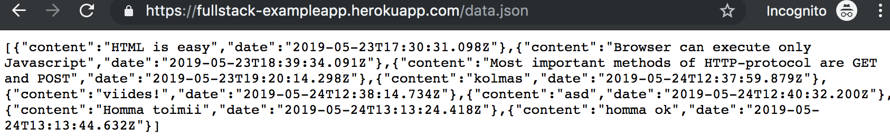
在那里我们找到了JSON "原始数据 "中的笔记。默认情况下，基于Chromium的浏览器在显示JSON数据方面不是太好。可以使用插件来处理格式化问题。例如，在Chrome上安装JSONVue，然后重新加载页面。现在数据已经被很好地格式化了：
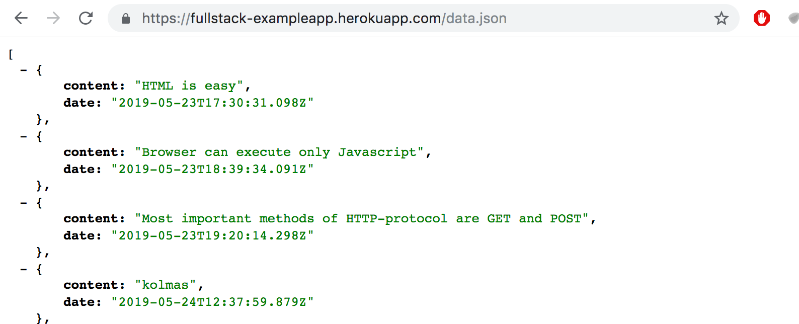
因此，上面的笔记页面的JavaScript代码下载了包含笔记的JSON数据，并从笔记内容中形成了一个符号列表。
这是由以下代码完成的：
const data = JSON.parse(this.responseText)
console.log(data)
var ul = document.createElement('ul')
ul.setAttribute('class', 'notes')
data.forEach(function(note) {
var li = document.createElement('li')
ul.appendChild(li)
li.appendChild(document.createTextNode(note.content))
})
document.getElementById('notes').appendChild(ul)
该代码首先创建了一个带有ul标签的无序列表...
var ul = document.createElement('ul')
ul.setAttribute('class', 'notes')
...然后再为每个 Note 加上一个 li-标签。仅将每个 Note 的 content 字段变成了 li-标签 的内容，而原始数据的 timestamps 时间戳在这里并没派上用场。
data.forEach(function(note) {
var li = document.createElement('li')
ul.appendChild(li)
li.appendChild(document.createTextNode(note.content))
})
现在在你的开发者控制台打开Console标签。
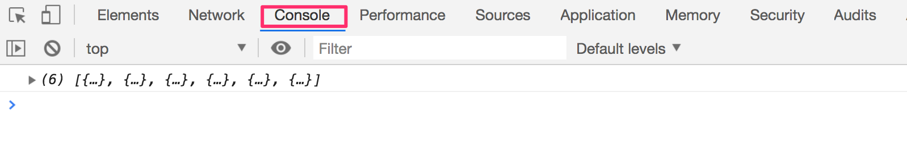
通过单击行首的小三角形，可以展开控制台上的文本。
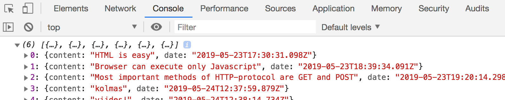
控制台上的这个输出是由代码中的console.log命令引起的：
const data = JSON.parse(this.responseText)
console.log(data)
因此，在从服务器接收到数据之后，代码将其打印到了控制台。
在整个课程中，你会经常用到 Console 选项卡和 console.log 命令。
Event handlers and Callback functions
这段代码的结构有点奇怪。
var xhttp = new XMLHttpRequest()
xhttp.onreadystatechange = function() {
// code that takes care of the server response
}
xhttp.open('GET', '/data.json', true)
xhttp.send()
发送到服务器的请求放在了最后一行，但是处理响应的代码却在上面定义了。这是怎么回事？
xhttp.onreadystatechange = function () {
这一行，为进行请求的xhttp对象定义了onreadystatechange事件的event handler。当该对象的状态发生变化时，浏览器会调用事件处理函数。该函数代码检查readyState是否等于4（描述了操作已经完成的情况），以及响应的HTTP状态代码是否为200。
xhttp.onreadystatechange = function() {
if (this.readyState == 4 && this.status == 200) {
// code that takes care of the server response
}
}
调用事件处理程序的机制在JavaScript中非常常见。事件处理函数被称为回调函数。应用代码本身并不调用这些函数，但是运行时环境--即浏览器，在适当的时候，即事件发生时，会调用该函数。
Document Object Model or DOM
我们可以将 html 页面看作隐式树结构。
html
head
link
script
body
div
h1
div
ul
li
li
li
form
input
input
同样的树状结构可以在控制台的Elements元素选项卡上看到。
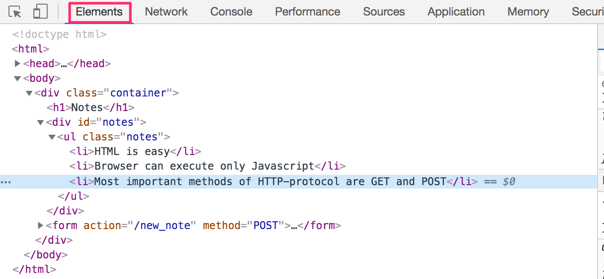
浏览器的工作，就是基于将HTML元素描绘成一棵树。
文档对象模型Document Object Model，或DOM，是一个应用编程接口(API)，它能够对与网页相对应的元素树进行程序化修改。
上一章介绍的JavaScript代码就是使用DOM-API在页面中添加了一个笔记列表。
下面的代码为变量ul创建了一个新节点，并为其添加了一些子节点。
var ul = document.createElement('ul')
data.forEach(function(note) {
var li = document.createElement('li')
ul.appendChild(li)
li.appendChild(document.createTextNode(note.content))
})
最后，变量ul的树枝被连接到整个页面的HTML树中的适当位置。
document.getElementById('notes').appendChild(ul)
Manipulating the document-object from console
一个HTML文档的DOM树的最顶端节点被称为document对象。我们可以使用DOM-API在网页上执行各种操作。你可以通过在控制台标签中输入document来访问document对象。
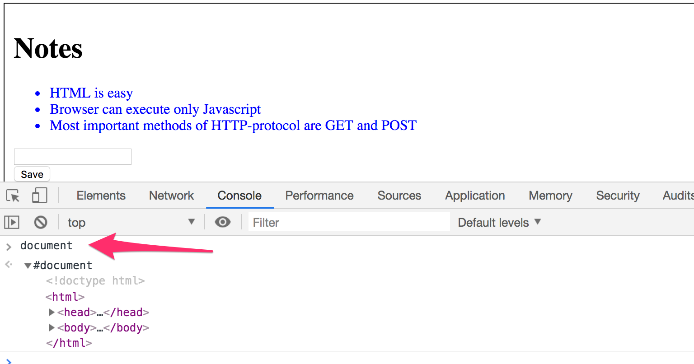
让我们从控制台向页面添加一个新的笔记。
首先，我们要从页面上获得笔记的列表。列表在页面的第一个ul-元素中。
list = document.getElementsByTagName('ul')[0]
然后创建一个新的li-元素，并在其中添加一些文本内容。
newElement = document.createElement('li')
newElement.textContent = 'Page manipulation from console is easy'
然后将新的li-元素加入到列表中。
list.appendChild(newElement)
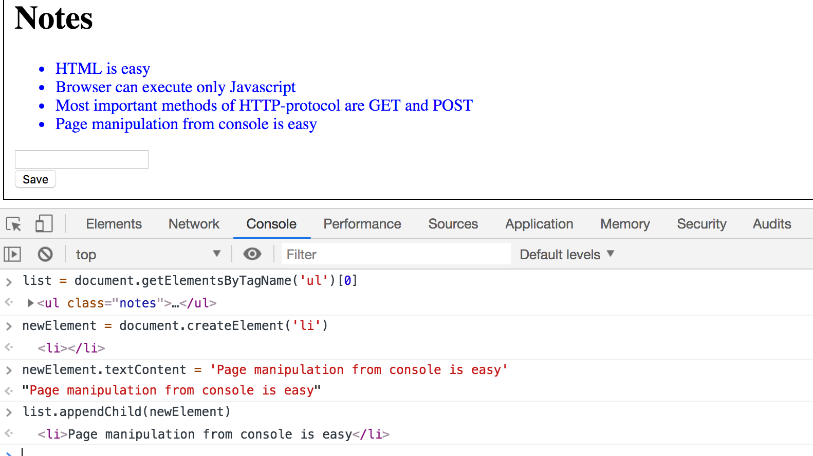
虽然页面在你的浏览器上更新，这些变化也不是永久性的。如果页面被重新加载，新的笔记将会消失，因为这些变化没有被推送到服务器上。浏览器获取的JavaScript代码将始终基于来自地址https://studies.cs.helsinki.fi/exampleapp/data.json的JSON-数据，来创建笔记列表。
CSS
笔记页面的HTML代码中的head元素包含一个link标签，它决定了浏览器必须从地址main.css获取一个CSS样式表。
层叠样式表Cascading Style Sheets，或称CSS，是一种用来决定网页外观的样式表语言。
获取到的CSS文件看起来如下所示：
.container {
padding: 10px;
border: 1px solid;
}
.notes {
color: blue;
}
该文件定义了两个class selectors类选择器。这两个选择器用于选择页面的某些部分，并对它们定义样式规则，来装饰它们。
一个类选择器的定义总是以句号开始，并包含类的名称。
这些类是属性，它可以被添加到HTML元素中。
CSS属性可以在控制台的Elements标签中检查。
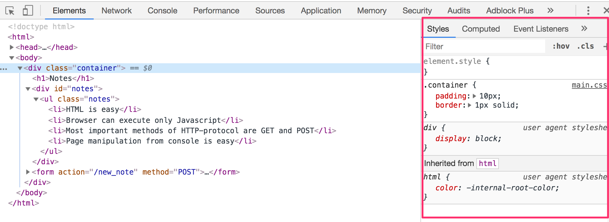
最外层的div元素有container类。包含笔记列表的ul元素有notes类。
该CSS规则定义了带有container类的元素，将勾勒出一个1像素宽的边框。它还在元素上设置了10像素的padding，这在元素的内容和边框之间增加了一些空隙。
第二条CSS规则将笔记的文本颜色设置为蓝色。
除了类之外，HTML元素还可以有其他属性。包含笔记的div元素有一个id属性。JavaScript代码使用这个id来寻找这个元素。
控制台的Elements标签可以用来改变元素的样式。
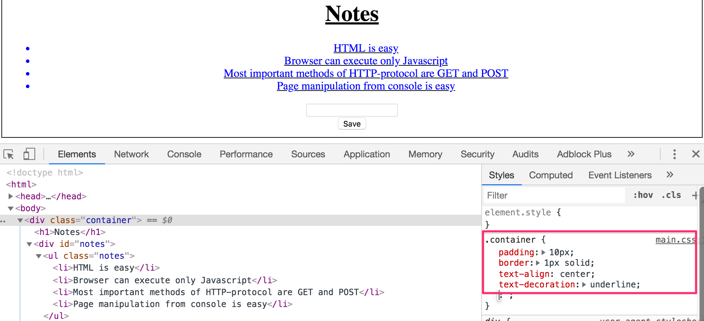
在控制台中所作的改变也不会是永久性的。如果你想做永久的改变，必须把它们保存到服务器上的CSS样式表中。
Loading a page containing JavaScript - review
让我们回顾一下在浏览器上打开 https://studies.cs.helsinki.fi/exampleapp/notes ，会发生什么。
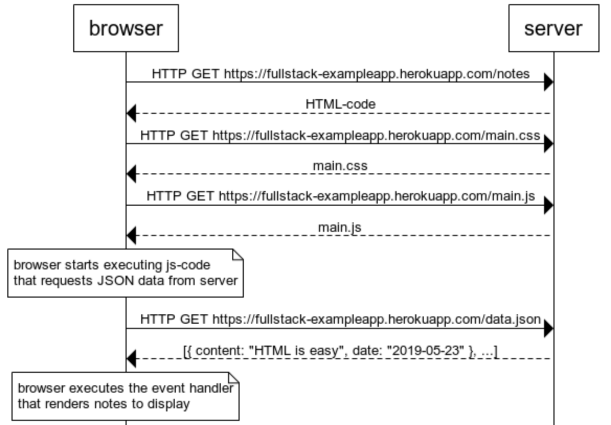
- 浏览器使用HTTP GET请求从服务器上获取定义页面内容和结构的HTML代码。
- HTML代码中的链接使浏览器也获取了CSS样式表main.css...
- ...和一个JavaScript代码文件main.js。
- 浏览器执行该JavaScript代码。该代码向地址https://studies.cs.helsinki.fi/exampleapp/data.json 发出HTTP GET请求，该地址
以JSON数据形式返回笔记。
- 当数据被获取后，浏览器执行一个事件处理程序，它使用DOM-API将笔记渲染到页面上。
Forms and HTTP POST
接下来让我们来看看如何添加一个新的笔记。
笔记页面包含一个form表单元素。
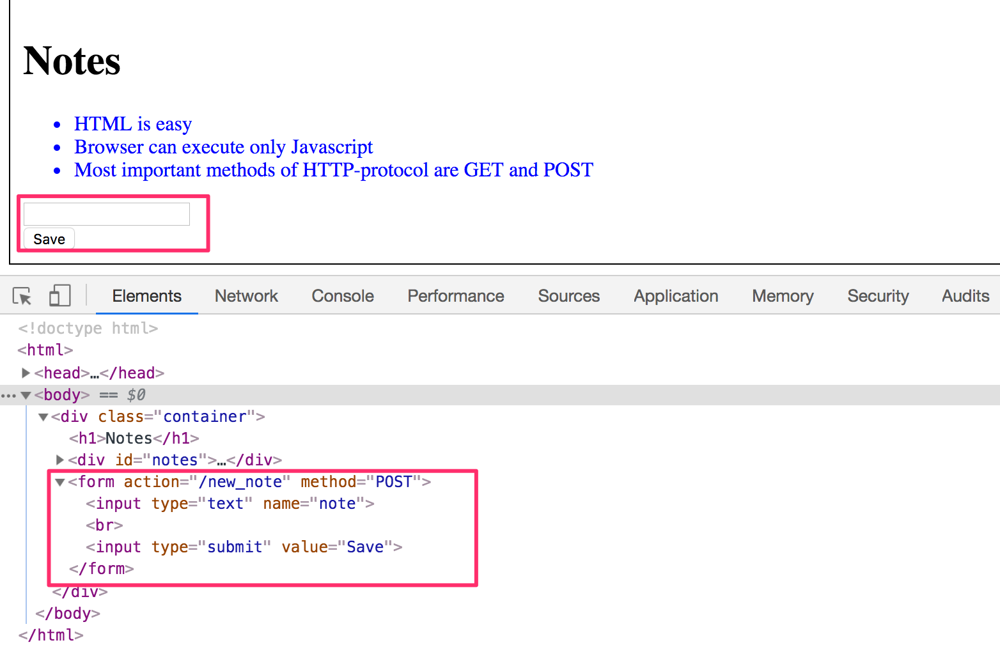
当表单上的按钮被点击时，浏览器将把用户的输入发送到服务器上。让我们打开网络标签，看看提交表单是什么样子。
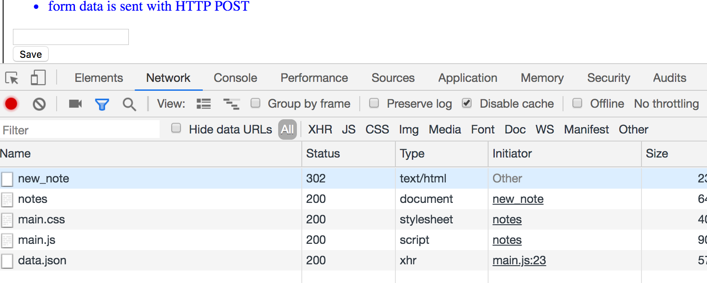
很惊奇吧，提交表单会引起至少5个HTTP请求。
第一个是表单提交事件。 让我们放大一下:
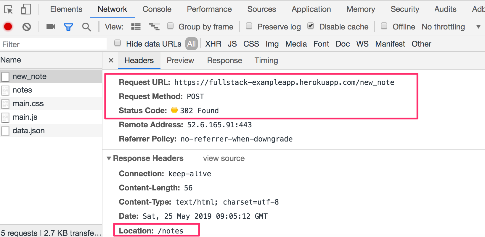
这是一个HTTP POST请求，指向服务器地址new_note。服务器回应的是HTTP状态代码302。这是一个URL重定向，服务器要求浏览器对头信息Location中定义的地址--即地址notes做一个新的HTTP GET请求。
于是，浏览器重新加载了笔记页面。重载又引起了三个HTTP请求：获取样式表（main.css）、JavaScript代码（main.js）和笔记的原始数据（data.json）。
Network选项卡还显示了随表单提交的数据。
注意：对于新版Chrome，Form Data下拉菜单在新的标签Payload内，Payload标签位于Headers标签的右侧。
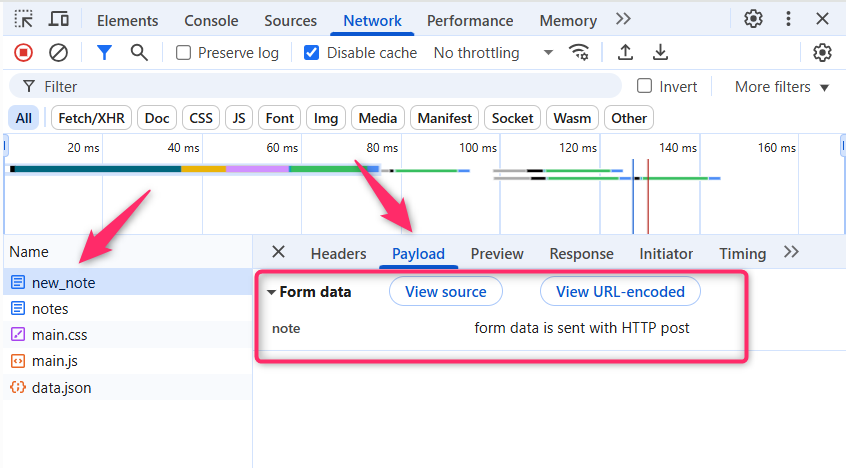
表单标签有属性action和method，它们定义了提交表单是以HTTP POST请求的方式完成的，地址为new_note。
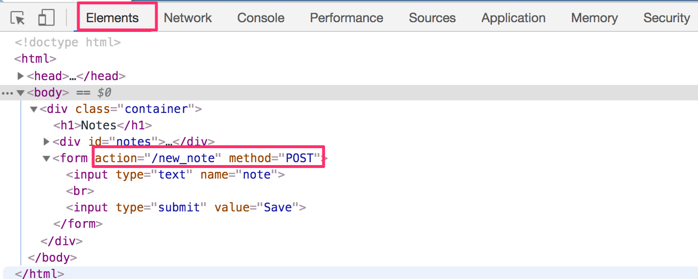
服务器上负责POST请求的代码非常简单（注意：这个代码在服务器上，而不是在浏览器获取的JavaScript代码上）。
app.post('/new_note', (req, res) => {
notes.push({
content: req.body.note,
date: new Date(),
})
return res.redirect('/notes')
})
数据被作为POST请求的body发送。
服务器可以通过访问请求对象req的req.body字段来访问这些数据。
服务器创建一个新的Note对象，并将其添加到一个名为notes的数组中。
notes.push({
content: req.body.note,
date: new Date(),
})
笔记对象有两个字段。content字段包含笔记的实际内容，和date字段包含笔记创建的日期和时间。
服务器不会将新的笔记保存到数据库中，所以当服务器重新启动时，新的笔记会消失。
AJAX
应用的笔记页面遵循九十年代早期的网络开发风格，"使用Ajax"，它处于2000年初网络技术浪潮的顶峰上。
AJAX(Asynchronous JavaScript and XML)是2005年2月在浏览器技术进步的背景下引入的一个术语，用来描述一种新的革命性的方法，它能够使用包含在HTML中的JavaScript来获取网页内容，而不需要重新渲染网页。
在AJAX时代之前，所有的网页都像我们在本章前面看到的传统网络应用那样工作。
页面上显示的所有数据都是通过服务器生成的HTML代码获取的。
笔记页面使用AJAX来获取笔记数据。提交表单仍然使用传统的提交网络表单的机制。
应用的URL反映了古老的、无忧无虑的时代。JSON数据从URL https://studies.cs.helsinki.fi/exampleapp/data.json中获取，新的笔记被发送到URL https://studies.cs.helsinki.fi/exampleapp/new_note中。
现在像这样的URL是不会被接受的，因为它们不遵循公认的RESTfulAPI的惯例，我们将在第三章中进一步研究。
称为AJAX的东西现在已经非常普遍，以至于被认为是理所当然的。这个词已经被遗忘了，新生代甚至没有听说过它。
Single page app
在我们的示例应用中，主页的工作方式与传统的网页一样。所有的逻辑都在服务器上，而浏览器只按照指示渲染HTML。
笔记页面把生成现有笔记的HTML代码的部分责任交给了浏览器。浏览器通过执行从服务器上获取的JavaScript代码来完成这项任务。这些代码从服务器上获取JSON数据，并使用DOM-API在页面上添加显示笔记的HTML元素。
近年来，出现了创建网络应用的单页应用 (SPA)风格。SPA风格的网站并不像我们的样例应用那样从服务器上单独获取所有的页面，而是只由一个从服务器上获取的HTML页面组成，其内容由在浏览器中执行的JavaScript来操作。
我们应用的笔记页面与SPA风格的应用有一些相似之处，但还没有完全达到目的。尽管渲染笔记的逻辑是在浏览器上运行的，但该页面仍然使用传统的方式来添加新的笔记。数据通过表单提交被发送到服务器，服务器通过redirect指示浏览器重新加载笔记页面。
我们的例子应用的单页应用版本可以在https://studies.cs.helsinki.fi/exampleapp/spa找到。
乍看之下，这个应用与之前的应用完全一样。
HTML代码几乎相同，但JavaScript文件不同（spa.js），而且在定义form-tag的方式上有一点变化。
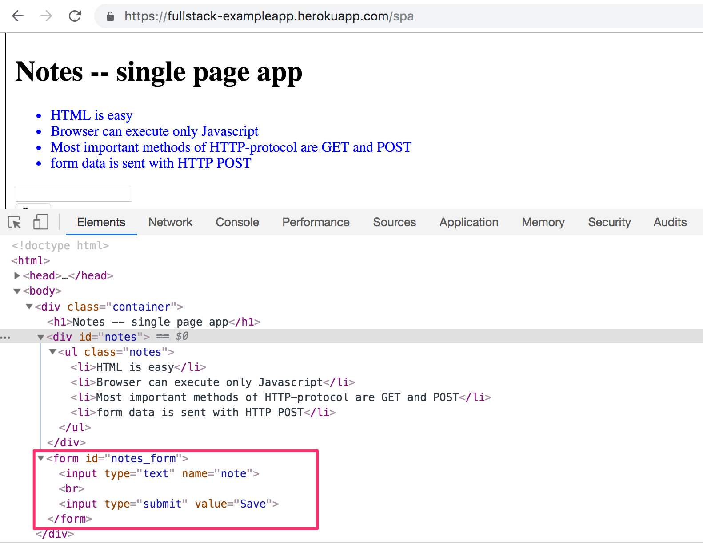
这个表单没有action或method属性来定义如何和往哪里发送输入数据。
打开网络-标签并清空它。当你现在创建一个新的笔记时，你会发现浏览器只向服务器发送了一个请求。
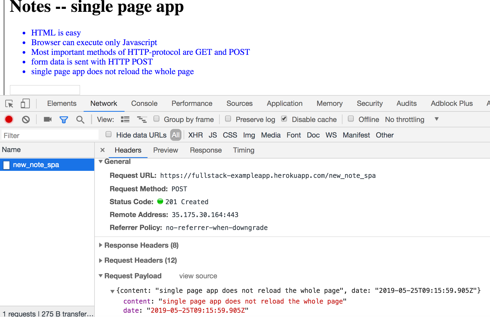
发送到地址new_note_spa的POST请求包含了新笔记的JSON数据，包含了笔记的内容（content）和时间戳（date）。
{
content: "single page app does not reload the whole page",
date: "2019-05-25T15:15:59.905Z"
}
请求的Content-Type头告诉服务器，包含的数据是以JSON格式表示的。
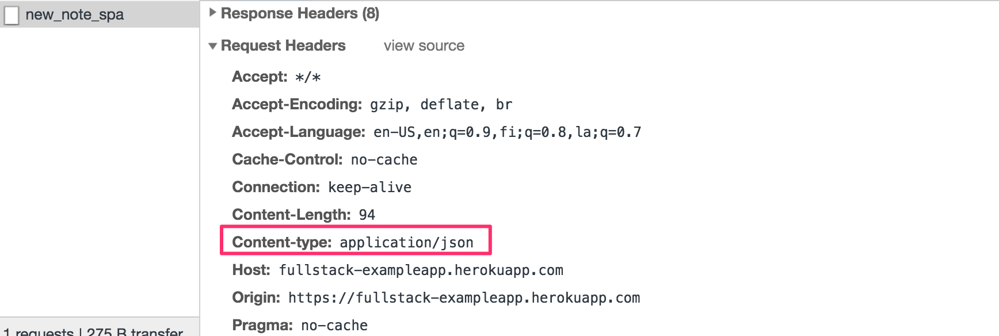
如果没有这个头，服务器将不知道如何正确解析数据。
服务器以状态代码201 Created进行响应。这一次服务器没有要求重定向，浏览器停留在同一个页面上，并且没有再发送HTTP请求。
应用的SPA版本没有以传统方式发送表单数据，而是使用了它从服务器上获取的JavaScript代码。
我们将研究一下这段代码，尽管现在了解它的所有细节并不重要。
var form = document.getElementById('notes_form')
form.onsubmit = function(e) {
e.preventDefault()
var note = {
content: e.target.elements[0].value,
date: new Date(),
}
notes.push(note)
e.target.elements[0].value = ''
redrawNotes()
sendToServer(note)
}
命令document.getElementById('notes_form')指示代码从页面上获取表单元素，并注册一个事件处理程序来处理表单提交事件。该事件处理程序立即调用方法e.preventDefault()来阻止表单提交的默认处理。默认方法会将数据发送到服务器并导致一个新的GET请求，这是我们不希望发生的。
然后事件处理函数创建了一个新的笔记，用notes.push(note)命令将其添加到笔记列表中，重新渲染页面上的笔记列表，并将新笔记发送到服务器。
发送笔记到服务器的代码如下。
var sendToServer = function(note) {
var xhttpForPost = new XMLHttpRequest()
// ...
xhttpForPost.open('POST', '/new_note_spa', true)
xhttpForPost.setRequestHeader(
'Content-type', 'application/json'
)
xhttpForPost.send(JSON.stringify(note))
}
该代码确定数据将以HTTP POST请求发送，数据类型为JSON。数据类型由Content-type头决定。然后，数据被作为JSON-字符串发送。
应用代码可在https://github.com/mluukkai/example_app中找到。
值得记住的是，这个应用只是为了演示课程的概念。代码在某种程度上遵循了不良的开发风格，在创建你自己的应用时，不应作为一个例子来使用。所用的URL也是如此。发送新笔记的URL new_note_spa并不符合当前的最佳实践。
JavaScript-libraries
这个示例应用是用所谓的vanilla JavaScript完成的，只使用DOM-API和JavaScript来操作页面的结构。
与其只使用JavaScript和DOM-API，不如使用包含更简易工具的库，与DOM-API相比更容易操作，通常用于操作页面。这些库中一个一直很流行的是jQuery。
jQuery是早在网络应用主要遵循服务器生成HTML页面的传统风格时开发的，这种风格的功能通过在浏览器端使用 JavaScript 搭配使用 jQuery 来增强。jQuery成功的原因之一是其所谓的跨浏览器兼容性。这个库无论在哪种浏览器或制造它的公司都能工作，所以不需要针对浏览器的解决方案。如今，考虑到JavaScript的发展，使用jQuery就不那么合理了，最流行的浏览器一般都能很好地支持基本功能。
单页应用的兴起带来了几种比jQuery更 "现代 "的网页开发方式。第一波开发者的最爱是BackboneJS。之后，2012年谷歌推出的AngularJS，迅速成为现代网页开发的事实标准。
然而，2014年10月，在Angular团队宣布对第一版的支持将结束且Angular 2将不会向后兼容第一版后，Angular的人气骤降。Angular 2和较新的版本并没有得到太热烈的欢迎。
目前最流行的实现网络应用逻辑的浏览器端的工具是Facebook's React库。
在本课程中，我们将熟悉React和Redux库，它们经常被一起使用。
React的地位似乎很强大，但JavaScript的世界是不断变化的。例如，最近一个新来者--VueJS--已经吸引了一些人的兴趣。
Full stack web development
课程名称里的全栈网络开发是什么意思？全栈是一个人人都在谈论的流行语，而没有人真正知道它的含义。或者说，至少对这个词没有一个公认的定义。
实际上，所有的网络应用都有（至少）两个 "层"：浏览器更接近最终用户，是最上面的一层，而服务器是下面的一层。在服务器下面通常还有一个数据库层。因此，我们可以把网络应用的架构看作是一种层的堆栈。
通常，我们还谈论前端和后端。浏览器是前端，在浏览器上运行的JavaScript是前端代码。另一边，服务器则是后端。
在本课程中，全栈网络开发意味着我们关注应用的所有部分：前端、后端和数据库。有时，服务器上的软件和它的操作系统也被看作是堆栈的一部分，但我们不会去研究这些。
我们将使用Node.js运行环境，用JavaScript做后端编码。在堆栈的多个层上使用相同的编程语言给全栈网络开发带来了一个全新的维度。然而，全栈网络开发并不要求所有的栈都使用相同的编程语言（JavaScript）。
过去，开发人员专门从事堆栈的某一层，例如后端，是比较常见的。后端和前端的技术是完全不同的。随着全栈趋势的发展，开发人员熟练掌握应用和数据库的所有层已经成为普遍现象。通常情况下，全栈开发人员还必须有足够的配置和管理技能来操作他们的应用，例如上云。
JavaScript fatigue
全栈网络开发在许多方面都具有挑战性。在许多地方会有突发情况，并且调试起来比普通桌面应用要困难得多。JavaScript (与许多其他语言相比) 并不总是像你期望的那样工作，其运行时环境的异步工作方式带来了各种各样的挑战。网络中的通信要求对 HTTP 协议的知识储备。另外，还必须处理数据库、服务器管理和配置。了解足够的 CSS 至少在一定程度上能够使应用显得好看。
JavaScript的世界发展迅速，这给它自身带来了一系列的挑战。工具、库和语言本身都在不断发展。有些人开始对这种不断的变化感到厌倦，并为此创造了一个术语：JavaScript疲劳。可以阅读auth0上的如何管理JavaScript疲劳 或Medium上的JavaScript疲劳。
在这个课程中，你自己也会遭受到JavaScript的疲劳。幸运的是，有一些方法可以使学习曲线变得平滑，我们可以从编码而不是配置开始。我们不能完全避免配置，但我们可以在接下来的几周里愉快地推进，同时避开最糟糕的配置地狱。